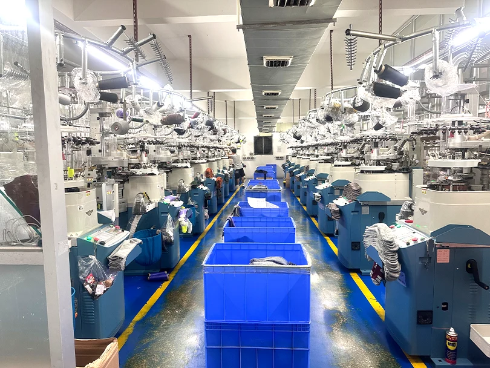
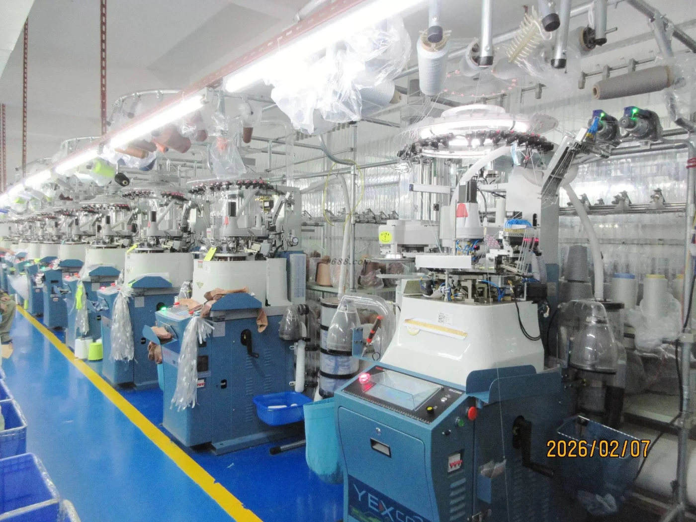
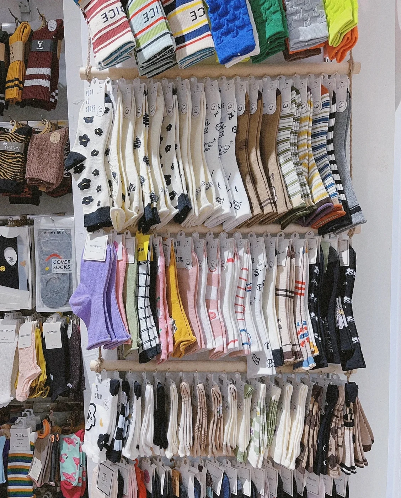

Brands & Retail
Create a recognizable assortment with your own colors, artwork and label direction.
We turn your ideas into socks made for your brand. Since 2010, our factory has brought together knitting experience and a practical approach to custom collections.
Talk About Your Project ↗Step Inside Our Workshop ↓
Your collection starts with a few questions: who will wear it, what should it feel like, and how should your brand appear? We work through those decisions with you before the first sample.
Our focus is custom socks for business orders, from everyday essentials to statement patterns. With our own workshop and approximately 50 knitting machines, we help develop a specification that can move from an idea to a physical sample and then a bulk order.
Explore the Details You Can Customize ↗
Rows of knitting equipment form the heart of our production space. Each collection begins with a planned combination of yarn, construction, color and artwork.

Patterns, stripes, textured knits and quiet everyday essentials. A sample collection is a useful starting point for deciding how your own socks should look and feel.
Bring your references and brand palette. Together, we can discuss the material, height and design details for your collection.
Make It Your Own ↗Start with the people who will wear your socks. Then build the design, fit and presentation around them.
Create a recognizable assortment with your own colors, artwork and label direction.
Bring a shared identity to a collection, with a size plan for your members.
Make an everyday item personal with a thoughtful design and gift presentation.
Develop merchandise that reflects your community and the way it will be used.
Before knitting begins, we help bring your choices into one brief. A clear sample makes it easier to approve the collection.
Send your design direction, sock type, quantities, sizes and required delivery date.
Review material choices, artwork and packaging alongside your quotation.
Sample preparation takes 3–7 days. Check the look, feel and fit before approval.
Bulk production takes about 30 days after approval. Confirm shipping time separately.
A physical sample is the opportunity to review the details that a screen cannot show. Keep the agreed specifications alongside it, so everyone has the same reference for production.
Review logo clarity, pattern placement and physical yarn colors.
Check the foot length, cuff feel and stretch against your intended size range.
Confirm the label artwork, size information and packing arrangement.
Our factory was established in 2010. GoodStartSocks focuses on custom sock collections for business buyers.
Orders start at 500 pairs. We confirm the available split across designs and sizes when reviewing your brief.
Yes. Send your artwork, brand references and packaging direction. We will discuss the specifications for your quotation and sample.
Sample preparation takes 3–7 days and bulk production takes about 30 days after approval. Your final schedule depends on the specification and order plan; shipping is additional.
Share your sock type, artwork or references, quantity, shoe-size range, packaging needs and destination, plus the date you need the socks in hand.
Bring your idea. We will help work through the details.
Request a Custom Quote ↗